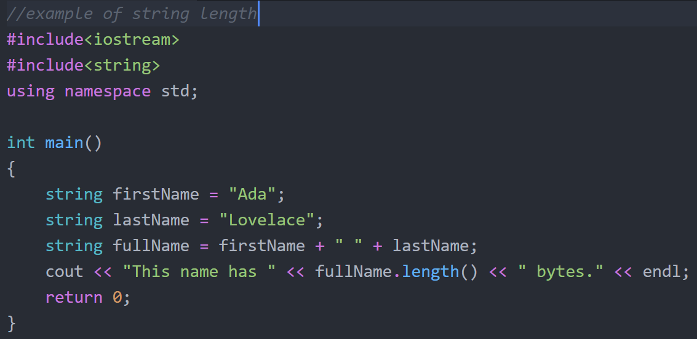

C++ Programming
Contents
C++ Programming#

Resources and Textbooks Used#
In this section we will be programming in C++ using examples and techniques found in these books and resources:
“Object-Oriented Programming Using C++” by Ira Pohl#
This book may be purchased here:
Amazon page to purchase “Object-Oriented Programming Using C++ by Ira Pohl”
Project Code on Github#
Project code is available at the following Github repositories:
Worked Examples in Object-Oriented Programming Using C++